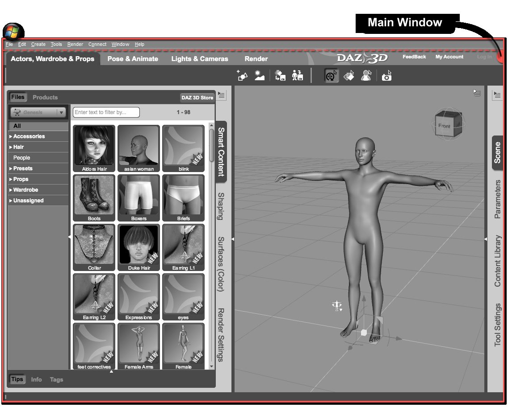
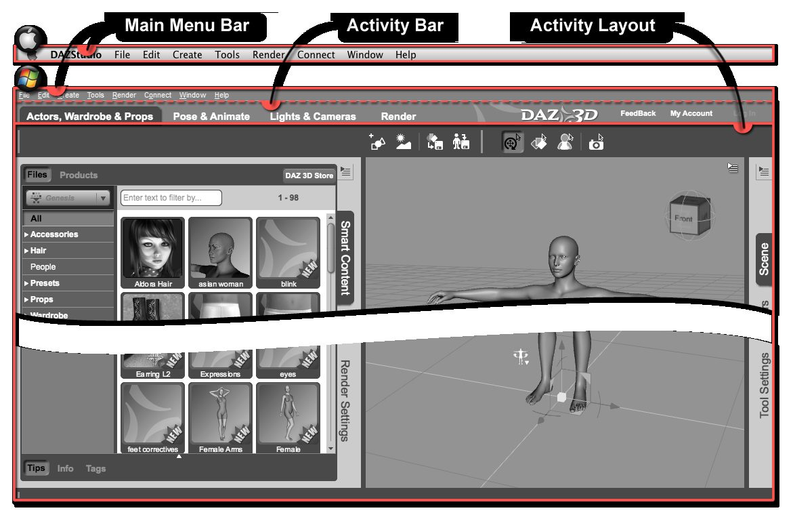

ជំពូក ១ — ស្វែងយល់ពីចំណុចប្រទាក់
បកប្រែពី៖ I — Navigating the Interface · An Introduction to DAZ Studio
ការសិក្សាកម្មវិធីថ្មីអាចជារឿងគួរឱ្យភ័យខ្លាច។ ការរកផ្លូវក្នុងចំណុចប្រទាក់ថ្មីអាចពិបាក ហួសចិត្ត និងបំបាក់ទឹកចិត្ត។ គោលដៅមួយក្នុងការរចនាចំណុចប្រទាក់ Daz Studio គឺធ្វើឱ្យវាងាយស្រួលបំផុតសម្រាប់អ្នកប្រើ ដោយមិនបាត់បង់មុខងារ — ដោយដាក់អំណាចទាំងអស់នៅក្នុងដៃរបស់អ្នក។
រឿងដំបូងដែលត្រូវដឹង៖ ចំណុចប្រទាក់ Daz Studio អាចបត់បែនបានទាំងស្រុង។ អ្នកអាចដាក់ផ្ទាំង (Panes) និងរបារឧបករណ៍ (Toolbars) នៅស្ទើរគ្រប់កន្លែងដែលចង់បាន ដើម្បីឱ្យឧបករណ៍ (Tools) និងសកម្មភាព (Actions) ដែលអ្នកប្រើញឹកញាប់នៅជិតដៃជានិច្ច។
ផ្នែកសំខាន់ៗទាំង ៣ នៃចំណុចប្រទាក់
ចំណុចប្រទាក់ចែកចេញជាផ្នែកធំៗ ៣៖
Main Menu Bar — ម៉ឺនុយកម្រិតខ្ពស់ដែលស្គាល់ជាទូទៅ ដូចជា File, Edit, Help ជាដើម។ ម៉ឺនុយនីមួយៗមាន «Submenus» និង «Actions»។
Activity Bar — មាន «Activity Tabs» សម្រាប់ជ្រើស «Activity» ដូចជា Actors, Wardrobe & Props, Pose & Animate, Lights & Cameras ឬ Render។
Activity Layout — ផ្នែកដែលនៅសល់ រួមមាន Viewport ផ្ទាំង (Panes) និងរបារឧបករណ៍សម្រាប់ Activity បច្ចុប្បន្។


ផ្ទាំងមេ (Main Window) និងផ្នែកសំខាន់ៗទាំង ៣ — រូបភាពពីឯកសារផ្លូវការ DAZ 3D


ធាតុរង (children) នៃផ្នែកសំខាន់ៗទាំង ៣ — រូបភាពពីឯកសារផ្លូវការ DAZ 3D
Interface Layouts ទាំង ៤ ដែលភ្ជាប់មកជាមួយ
ទោះបីអាចបត់បែនបានទាំងស្រុង អ្នកមិនចាំបាច់សាងសង់វាពីសូន្យទេ — Daz Studio ភ្ជាប់មកជាមួយ Interface Layouts ចំនួន ៤ សម្រាប់កម្រិតអ្នកប្រើផ្សេងៗគ្នា។ ដើម្បីប្ដូរ layout៖ ចុចម៉ឺនុយ Window > Workspace > Select Layout… រួចជ្រើសពីម៉ឺនុយធ្លាក់ចុះ «Layout»។
Full Service [Beta]
រចនាសម្រាប់អ្នកប្រើថ្មី — ងាយស្រួលបំផុតក្នុងចំណោម layout ទាំងអស់ ផ្ដល់បទពិសោធន៍ណែនាំដំបូង និងការពារកំហុសទូទៅជាច្រើន។ វាដឹកនាំអ្នកតាមលំហូរការងារសាមញ្ញបំផុត ដែលល្អសម្រាប់អ្នកថ្មី ប៉ុន្តែមានកម្រិតសម្រាប់អ្នកផ្សេងទៀត។ Layout នេះនៅតែជា [Beta] (កំពុងអភិវឌ្ឍន៍)។
Note
ពេលប្រើ layout Full Service [Beta] ចំណុចប្រទាក់ត្រូវបានចាក់សោ — មិនអាចបត់បែនបានទេ។
Hollywood Blvd
Layout លំនាំដើម សម្រាប់អ្នកប្រើថ្មីដែលធ្លាប់ Render មកខ្លះហើយ។ វាស្រដៀង Full Service [Beta] ប៉ុន្តែផ្ដល់ឧបករណ៍ និង Actions ច្រើនជាង — Activities មួយចំនួនត្រូវបានលុបចេញ ឬបញ្ចូលគ្នា ដើម្បីឱ្យអ្នកគ្រប់គ្រងលំហូរការងាររបស់ខ្លួនបានច្រើនជាង។
Important
មគ្គុទ្ទេសក៍អ្នកប្រើប្រាស់ទាំងមូលនេះផ្អែកលើ layout Hollywood Blvd។
Self Serve
មធ្យមភាពរវាង Hollywood Blvd (សម្រាប់អ្នកចាប់ផ្តើម) និង City Limits (កម្រិតខ្ពស់)។ នៅមាន Activities នៅខាងលើ ប៉ុន្តែត្រូវបានបង្រួម — អនុញ្ញាតឱ្យបត់បែន Activity នីមួយៗតាមលំហូរការងាររបស់អ្នក។ Toolbar របស់ Activity នីមួយៗមាន Actions ផ្សេងៗគ្នា ហើយក៏អាចបត់បែនបានដែរ។
City Limits
តំណាងឱ្យជំនាញ 3D កម្រិតខ្ពស់។ អ្វីដែលអ្នកនឹងកត់សម្គាល់មុនគេ៖ គ្មាន Activities នៅខាងលើទេ — City Limits ដាក់អ្វីៗទាំងអស់នៅចុងម្រាមដៃរបស់អ្នក រួមទាំង Actions បន្ថែមសម្រាប់បង្កើតមាតិកា (Content creation)។ គួរប្ដូរមក layout នេះតែពេលអ្នកស្ទាត់ជំនាញនឹង Daz Studio ហើយប៉ុណ្ណោះ។
ការបត់បែនចំណុចប្រទាក់ដោយខ្លួនឯង
វិធីងាយស្រួលបំផុតគឺ អូសផ្ទាំង (Panes) ទៅកន្លែងដែលអ្នកចង់បាន៖
ដើម្បីផ្លាស់ទីផ្ទាំង ចុចឆ្វេងសង្កត់លើ tab ជាប់នឹងគែមផ្ទាំង រួចអូសទៅគ្រប់កន្លែងលើអេក្រង់
អូសទៅកណ្ដាល Viewport → ផ្ទាំងក្លាយជា «Pane Group» អណ្ដែតសេរី។ ទ្រនិចកណ្ដុរប្ដូររូបរាង៖ ព្រួញទ្វេទិស = ប្ដូរទំហំ (នៅគែមក្រៅ) · ព្រួញបួនទិស = ផ្លាស់ទី (នៅរបារខាងលើ)
Pane groups អាច dock នៅខាងឆ្វេង ស្ដាំ លើ ឬក្រោម Viewport — អូសវាទៅជិតគែម Main Window ហើយ «Docking Area» នឹងលេចពណ៌បញ្ជាក់កន្លែងដែលវានឹងត្រូវដាក់
បើមាន pane group dock រួចហើយ អាចបន្ថែមផ្ទាំងផ្សេងចូលដោយអូស tab របស់វាទៅដាក់ក្បែរ tab ដែលមាន
Note
Pane groups អាច dock ក្បែរគ្នាក្នុង Docking Area តែមួយ បង្កើតជាជួរឈរ ឬជួរដេកបន្ថែម។
ផ្ទាំងដែលបើកក្នុង layout ណាមួយ គ្រាន់តែជាផ្នែកតូចនៃផ្ទាំងទាំងអស់ (មាន ៣៣+ ក្នុង Daz Studio)។ ដើម្បីបើកផ្ទាំងដែលមិនទាន់ឃើញ៖ Window > Pane (Tabs) រួចជ្រើសផ្ទាំងដែលចង់បាន។
Tip
ក៏អាចចុចស្ដាំលើផ្នែកទទេនៃ group (ក្បែរ tabs) រួចជ្រើសពីម៉ឺនុយ Add Pane (Tab) បានដែរ។
រក្សាទុក layout ផ្ទាល់ខ្លួន
បើអ្នករៀបចំ layout បានដូចចិត្ត សូមរក្សាទុកវា៖ Window > Workspace > Save Layout As… ឬចុចគ្រាប់ F4 (ផ្លូវកាត់លំនាំដើម)។ Layout នឹងលេចឡើងក្នុងផ្ទាំងសន្ទនា «Select a Layout» សម្រាប់ពេលក្រោយ។ បើមិនពេញចិត្តនឹងការប្ដូរ អាច Reset ទៅ layout លំនាំដើមទាំង ៤ ឬ layout ដែលរក្សាទុកពីមុនបាន។
Interface Styles (រូបរាងពណ៌)
ក្រៅពី layout «Interface Style» ក៏អាចប្ដូរបានដែរ។ Daz Studio មាន style ចំនួន ៣៖
Style |
លក្ខណៈ |
|---|---|
Main Street |
Style លំនាំដើម — រូបភាពតំណាង និងអក្សរធំ ពណ៌ប្រផេះស្រាលជាមួយ highlights ពណ៌ទឹកក្រូច |
Highway |
ពណ៌ដូច Main Street ប៉ុន្តែរូបភាពតំណាង និងពុម្ពអក្សរតូចជាង សន្សំកន្លែងអេក្រង់ |
Darkside |
ងងឹត — ពណ៌ប្រផេះចាស់ជាមួយ highlights ពណ៌លឿងចាស់ រូបភាពតំណាង/ពុម្ពអក្សរប្រហាក់ប្រហែល Highway ជាមួយគែមតឹងរ៉ឹង សន្សំកន្លែងអេក្រង់ |
ប្ដូរ style តាមរយៈ Window > Style > Select Style… — ជ្រើសពីម៉ឺនុយធ្លាក់ចុះនៅជ្រុងខាងលើស្ដាំ រួចចុច Apply ដើម្បីមើលជាមុន ឬ Accept ដើម្បីយក។ បត់បែនពណ៌បានតាមរយៈ Window > Style > Customize Colors…។
ផ្ទាំងសំខាន់ៗទាំង ៥ ដែលត្រូវស្គាល់
ទោះបី Daz Studio មានផ្ទាំងជាច្រើន មានផ្ទាំង ៥ ដែលសំខាន់ចំពោះលំហូរការងាររបស់អ្នកប្រើគ្រប់រូប — ទាំង ៥ អាចរកបានក្នុង Activity Actors, Wardrobe & Props នៃ layout Hollywood Blvd។
Smart Content
កន្លែងទី ១ ក្នុងចំណោម ២ សម្រាប់ផ្ទុកមាតិកា។ Smart Content បង្ហាញមាតិកាតាម បរិបទ (Context-based) — វាបង្ហាញតែមាតិកាដែលរចនាឡើងសម្រាប់វត្ថុដែលអ្នកកំពុងជ្រើសក្នុងឆាកប៉ុណ្ណោះ (មិនមែនមានន័យថាមាតិកាផ្សេងប្រើមិនបានទេ — សូមមើលផ្នែក Content Library)។ បើមិនមានជ្រើសអ្វីក្នុងឆាក ផ្ទាំងនេះបង្ហាញ Smart Content ទាំងអស់ដែលមាន geometry (តួ សម្លៀកបំពាក់ សក់ props និង environments) រួមទាំង Camera(s) Presets និង Light(s) Presets។
Note
DAZ Content Management Service (CMS) ត្រូវតែដំឡើង និងដំណើរការ ទើប Smart Content បង្ហាញបានត្រឹមត្រូវ។
នាំទៅមាតិកាដោយចុច categories ក្នុង «Category View» នៅខាងឆ្វេង។ Category ជាច្រើនមាន subcategories — ចុចព្រួញដេកដើម្បីពង្រីក។
មាន page ពីរសម្រាប់រុករក៖ Files (លំនាំដើម — បង្ហាញឯកសារនីមួយៗតាមអក្សរក្រមក្នុង «File View») និង Products (បង្ហាញផលិតផលទាំងមូលក្នុង «Product View»)។
នៅ page Products អ្នកមិនអាចផ្ទុកចូលឆាកផ្ទាល់ទេ រហូតដល់ «ចូលក្នុង» ផលិតផលសិន — ចុចពីរដងលើផលិតផល រួចឯកសារទាំងអស់របស់វានឹងលេចឡើង។
Note
ការរុករកតាម Product មិនមានការច្រោះតាមបរិបទទេ — ការជ្រើសក្នុងឆាកមិនត្រូវបានគិតពេលបង្ហាញមាតិកាផលិតផលទេ។
Content Library
កន្លែងទី ២ សម្រាប់ផ្ទុកមាតិកា — ផ្ទុយពី Smart Content វាអនុញ្ញាតឱ្យរុករកមាតិកា ទាំងអស់ ដែលអ្នកបានដំឡើង។ ផ្ទាំងចែកជាពីរផ្នែក៖ «Container View» (រុករកថត ផលិតផល ឬ categories) និង «Asset View» (បង្ហាញឯកសារ)។
វិធីរុករកមាន ៣៖
តាម format និងទីតាំង — ឧ. «DAZ Studio Formats» សម្រាប់មាតិកា native (Genesis, Genesis 2 និង add-ons) · «Poser Formats» សម្រាប់មាតិកា Poser® (Michael 4, Victoria 4, M/V 1–3 និង accessories របស់វា)
តាម Product — បញ្ជីផលិតផលតាមអក្សរក្រម ជាមួយឯកសារក្រោមផលិតផលនីមួយៗ
តាម Category — ដូច categories ក្នុង Smart Content ប៉ុន្តែមិនច្រោះតាមការជ្រើសក្នុងឆាកទេ
Note
ដើម្បីឱ្យមាតិកាលេចក្នុង Content Library វាត្រូវដំឡើងទៅក្នុង «Mapped Directory» ក្នុង Content Directory Manager។ ការរុករកតាម Product/Category ត្រូវការ CMS ដំណើរការ។
ក្នុង layout Hollywood Blvd ផ្ទាំងនេះនៅខាងស្ដាំ ហើយមានក្នុងគ្រប់ Activity។
Scene
បញ្ជីវត្ថុ ទាំងអស់ ដែលបានផ្ទុកក្នុងឆាក — តួ សម្លៀកបំពាក់ props កាមេរ៉ា ពន្លឺ ជាដើម។
ហេតុអ្វីវាសំខាន់? ចម្លើយគឺ ភាពងាយស្រួលក្នុងការជ្រើស (Selectability)។ វត្ថុដែលជ្រើសបានទាំងអស់ក្នុងផ្ទាំង Scene (តួ ឆ្អឹង កាមេរ៉ា ពន្លឺ prop) ហៅថា «Node» — គ្រាន់តែរក Node ក្នុងបញ្ជី រួចចុចលើវា (សង្កត់ Ctrl/Cmd ឬ Shift ដើម្បីជ្រើសច្រើន)។ ការជ្រើសក្នុង Viewport អាចធ្វើបាន ប៉ុន្តែស្មុគស្មាញពេលឆាកមានវត្ថុច្រើន — ផ្ទាំង Scene ជាវិធីងាយ និងត្រឹមត្រូវបំផុត។
Note
វត្ថុដែលបានជ្រើសនឹងលេចពណ៌ (highlighted)។ ដើម្បីដកការជ្រើស ចុចកន្លែងទទេក្នុងផ្ទាំង Scene ឬក្នុង Viewport។ ចុចស្ដាំក្នុងផ្ទាំង Scene បើកម៉ឺនុយជ្រើស/ដកជ្រើសបន្ថែម។
ការជ្រើសបច្ចុប្បន្នសំខាន់ណាស់ — វាប្រាប់ Smart Content ឱ្យបង្ហាញមាតិកាអ្វី ប្រាប់ Daz Studio ពីរបៀបផ្ទុកសម្លៀកបំពាក់/វាយនភាព និងកំណត់លក្ខណៈសម្បត្តិ (Properties) ដែលបង្ហាញ។
Parameters
កន្លែងកែប្រែវត្ថុដែលបានជ្រើស — មាន sliders សម្រាប់ Translation, Rotation និង Scale រួមទាំងលក្ខណៈសម្បត្តិជាច្រើនទៀត។ Properties ដែលមានអាស្រ័យលើវត្ថុដែលជ្រើស — តួ និង props មាន «Morphs» ឬ «Pose Controls» បន្ថែម។
ផ្ទាំងចែកជា ២ ជួរឈង៖ ខាងឆ្វេង «Property Groups» (រៀបចំលក្ខណៈសម្បត្តិជាក្រុម ដូចជា Transforms, Morphs, Display) — ចុចព្រួញដើម្បីពង្រីក ឬចុចស្ដាំសម្រាប់ជម្រើសពង្រីក/បង្រួមបន្ថែម
ខាងលើផ្ទាំងមានម៉ឺនុយធ្លាក់ចុះសម្រាប់ប្ដូរការជ្រើសឆាក — ដំណើរការដូចផ្ទាំង Scene
ជ្រើស Property Group នៅខាងឆ្វេង → លក្ខណៈសម្បត្តិទាំងអស់ក្នុងក្រុមលេចនៅខាងស្ដាំ។ ភាគច្រើនជា «Sliders» — អូស slider ដើម្បីកែតម្លៃ ឬចុចលើតម្លៃលេខ រួចវាយលេខផ្ទាល់ខ្លួន (អាចវាយកន្សោមគណិតវិទ្យាសាមញ្ញ ដូចជា
3/5ឬ5*2.13)
Surfaces
កន្លែងបត់បែនផ្ទៃរបស់វត្ថុ — ដូចជា «ហាងលាបពណ៌» របស់ Daz Studio៖ ពណ៌ specular ភាពរលង ភាពថ្លា និងច្រើនទៀត។ និយាយសាមញ្ញ វាកំណត់ពីរបៀបដែល ពន្លឺធ្វើអន្តរកម្ម ជាមួយផ្ទៃ (ឬមាឌ) របស់វត្ថុ។
ដូច Parameters ផ្ទាំងនេះមាន ២ ជួរឈង៖
ខាងឆ្វេង «Surface View» — បង្ហាញ Surfaces, Surface Selection Sets និង Property Groups របស់វត្ថុដែលជ្រើស។ ពង្រីកវត្ថុដើម្បីឃើញផ្ទៃរបស់វា · ជ្រើសផ្ទៃមួយដើម្បីកែ ឬសង្កត់ Shift ដើម្បីជ្រើសច្រើនផ្ទៃកែព្រមគ្នា
ខាងស្ដាំ page Editor — លក្ខណៈសម្បត្តិទាំងអស់របស់ផ្ទៃដែលជ្រើស (ហៅថា «Channels»)។ Channels សំខាន់ៗដែលគួរស្គាល់៖
Channel |
មុខងារ |
|---|---|
Diffuse Color / Strength |
ពណ៌ពិតរបស់គំរូ និងកម្រិតខ្លាំងនៃពណ៌នោះ |
Specular Color / Strength |
ពណ៌នៃ highlight (ចំណាំងផ្លាត) និងកម្រិតខ្លាំងរបស់វា |
Bump Strength |
ក្លែងធ្វើភាពគ្រើមលើផ្ទៃគំរូ |
Displacement Strength |
ប្ដូររូបរាង geometry ពិតប្រាកដពេល Render — សម្រាប់ព័ត៌មានលម្អិតតូចៗដោយមិនចាំបាច់ model |
Channel នីមួយៗកែបានច្រើនយ៉ាង — វិធីទូទៅបំផុតគឺផ្ទុក «Image Map» (រូបភាព ២ វិមាត្រ — Daz Studio គាំទ្រ .jpg, .png, .bmp និង .tiff) ដោយចុច «Image Menu Button» (រូបភាពតំណាងនៅខាងឆ្វេងនៃលក្ខណៈសម្បត្តិ)។
សំណាងល្អ ផលិតផលភាគច្រើនភ្ជាប់មកជាមួយ Material(s) Presets ដែលផ្ទុក Image Maps ជំនួសអ្នក — អាចផ្ទុកបានពី page Presets នៃផ្ទាំង Surfaces, ផ្ទាំង Smart Content ឬ Content Library។ នេះជាវិធីងាយស្រួលបំផុតក្នុងការកែផ្ទៃគំរូ។
Note
អក្សរ «(s)» ក្នុង Material(s) Preset មានន័យថា Preset មួយអាចប៉ះពាល់ផ្ទៃច្រើន ឬផ្ទៃតែមួយ។ ចុចពីរដងលើ preset ដើម្បីត្រឡប់ការកំណត់ផ្ទៃទៅដើមវិញបានភ្លាមៗ។ ព័ត៌មានលម្អិតបន្ថែមនៅ ជំពូក ៣។
សេចក្ដីបញ្ចប់
ឥឡូវអ្នកយល់ពីរបៀបដែលចំណុចប្រទាក់ Daz Studio ដំណើរការ របៀបបត់បែនវា ប្ដូរ layout និង style — អ្នកត្រៀមខ្លួនរៀនបន្តហើយ។ ជំពូកបន្ទាប់នឹងដើរតាមលំហូរការងារធម្មតា៖ ផ្ទុកមាតិកា រៀបចំឆាកជាមួយតួ props ពន្លឺ កាមេរ៉ា និងចុងក្រោយ Render ចេញជារូបភាព ឬ animation ដើម្បីចែករំលែក។